Run the first loop
The first example is a tiny tabletop robot that misses a grasp, updates its belief, and retries differently.
git clone https://github.com/rsasaki0109/PythonInteractiveRobotics.git
cd PythonInteractiveRobotics
python3 -m pip install -e .
python3 examples/manipulation/01_pick_and_retry.pyRun in Colab
These notebooks clone the repo, install the lightweight package, run the real example headless, print the trace summary, and show the generated GIF.
Closed-loop robotics examples
Each GIF is generated from the same runnable example linked below. The point is the feedback loop: observe, update state, act, and recover when the world disagrees.
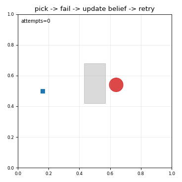
Pick and retry
grasp miss -> belief update -> retry
Open example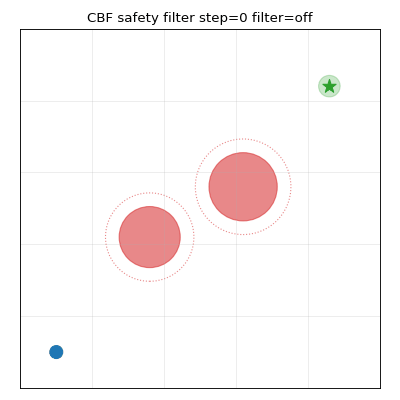
Runtime safety filter
nominal controller -> CBF projection -> safe motion
Open example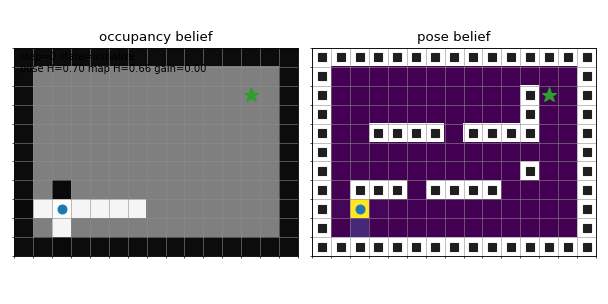
Active SLAM toy
pose belief -> map update -> information action
Open example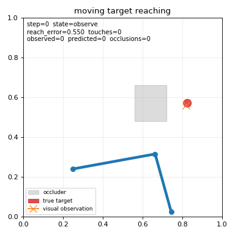
Reaching under occlusion
observe target -> predict through occlusion -> correct
Open example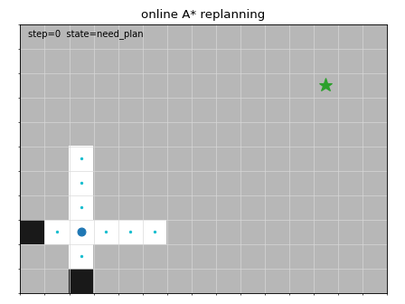
Online replanning
map update -> invalidate path -> A* replanning
Open example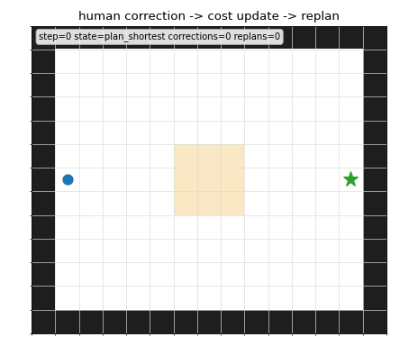
Human correction replanning
shortcut -> human feedback -> cost update -> replan
Open example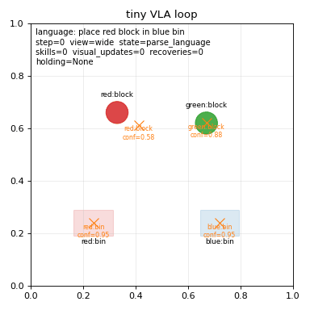
Tiny VLA loop
language goal -> visual tokens -> skill retry
Open example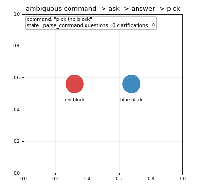
Clarifying question
ambiguous command -> ask -> answer -> act
Open example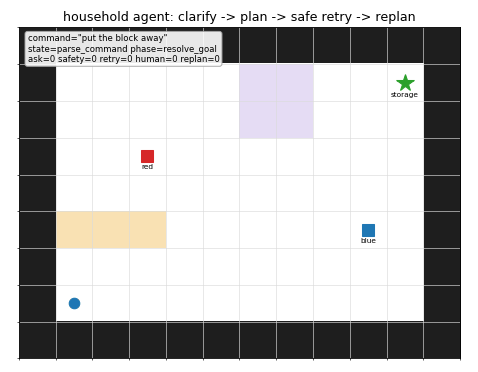
Household task agent
clarify -> plan -> safety check -> retry -> human replan
Open example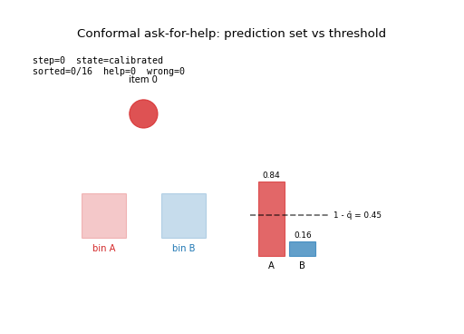
Conformal ask-for-help
calibrate -> prediction set -> place or ask
Open example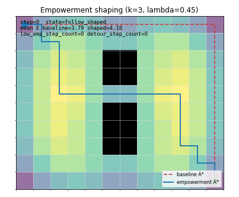
Empowerment navigation
reachable successors -> shaped A* -> open route
Open example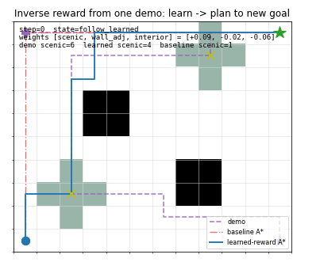
Inverse reward from demo
demo features -> learned weights -> shaped planning
Open exampleChoose a path through the repo
The GitHub repo keeps the full example index, contributor guide, trace contract, and bridge plans for ROS2 and simulators.